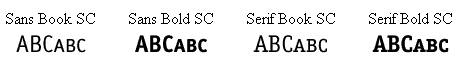

Lição 4: Fontes
Nesta lição estudaremos as fontes e como aplicá-las usando CSS. Veremos como criar situações para que determinada fonte seja visualizada pelo usuário mesmo não estando instalada em seu sistema operacional. Descreveremos as seguintes propriedades CSS:
Família de fontes [font-family]
A propriedade font-family é usada para definir uma lista de fontes e sua prioridade para apresentação de um elemento em uma página. Se a primeira fonte da lista não estiver instalada na máquina do usuário, deverá ser usada a segunda e assim por diante até ser encontrada uma fonte instalada.
Existem dois tipos de nomes para definir fontes: nomes para famílias de fontes e nomes para famílias genéricas. Os dois são explicados a seguir:
- nome para famílias de fontes
- Exemplos para este tipo (normalmente conhecidas como "font") são "Arial", "Times New Roman" ou "Tahoma".
- nome para famílias genéricas
- Famílias genéricas são fontes que pertencem a um grupo com aparência uniforme. Um exemplo são as fontes sans-serif que englobam a coleção de fontes que "não têm pé".
A diferença está mostrada na figura a seguir:
Ao listar fontes para seu website, comece com aquela preferida, seguindo-se algumas alternativas para ela. É recomendável encerrar a listagem das fontes com uma fonte genérica. Assim fazendo, em último caso a página será renderizada com fonte da mesma família das que foram especificadas quando todas as demais estiverem indisponíveis na máquina do usuário.
A seguir mostramos um exemplo de listagem de fontes:
h1 {font-family: arial, verdana, sans-serif;}
h2 {font-family: "Times New Roman", serif;}
Cabeçalhos <h1> serão renderizados com fonte "Arial". Se o usuário não tiver a font Arial instalada, será usada a fonte "Verdana". Se ambas estiverem indisponíveis na máquina do usuário será usada uma fonte da família sans-serif.
Notar que para especificar a fonte "Times New Roman" foram usadas aspas. Isto é necessário para fontes com nomes compostos e que contenham espaços entre os nomes.
Estilo da fonte [font-style]
A propriedade font-style define a escolha da fonte em normal, italic ou oblique. No exemplo a seguir todos as cabeçalhos <h2> serão em itálico.
h1 {font-family: arial, verdana, sans-serif;}
h2 {font-family: "Times New Roman", serif; font-style: italic;}
Fonte variante [font-variant]
A propriedade font-variant é usada para escolher as variantes normal ou small-caps. Uma fonte small-caps é aquela que usa letras maiúsculas de tamanhos reduzidos. Confundiu? Dê uma olhada nos exemplos a seguir:

Se a propriedade font-variant for definida para small-caps e não estiver disponível na máquina do usuário, será usada fonte em maiúscula.
h1 {font-variant: small-caps;}
h2 {font-variant: normal;}
Peso da fonte [font-weight]
A propriedade font-weight define quão negrito ou "pesada" deve ser renderizada a fonte. Uma fonte pode ser normal ou bold. Alguns navegadores suportam números de 100-900 (em intervalos de 100 em 100) para definir o peso da fonte.
p {font-family: arial, verdana, sans-serif;}
td {font-family: arial, verdana, sans-serif; font-weight: bold;}
Tamanho da fonte [font-size]
On tamanho da fonte é definido pela propriedade font-size.
Existem muitas unidades (p. ex.:. pixels e percentagens) que podem ser usadas para definir o tamanho da fonte. Neste tutorial nós usaremos as unidades mais comuns e apropriadas. Ver exemplos a seguir:
h1 {font-size: 30px;}
h2 {font-size: 12pt;}
h3 {font-size: 120%;}
p {font-size: 1em;}
Existe uma diferença fundamental entre as quatro unidades adotadas no exemplo acima. As unidades 'px' e 'pt' são absolutas, enquanto '%' e 'em' permitem ao usuário ajustar o tamanho das fontes ao seu gosto e necessidade. Muitos usuários têm restrições, como por exemplo, pessoas idosas, pessoas com visão limitada ou as que usam um monitor de baixa qualidade. Para fazer seu site acessível a todos, você deverá usar unidades como '%' ou 'em'.
Abaixo uma figura mostrando como ajustar o tamanho das fontes nos navegadores Mozilla Firefox e Internet Explorer. Tente você mesmo este ajuste — uma excelente funcionalidade do navegador, não é mesmo?
Compilando [font]
Usar font é uma abreviação que permite definir várias propriedades em uma só.
Veja a seguir quatro linhas de código usadas para definir propriedades de fonte para um parágrafo <p>:
p {
font-style: italic;
font-weight: bold;
font-size: 30px;
font-family: arial, sans-serif;
}
Usar a abreviação simplifica o código como mostrado abaixo:
p {
font: italic bold 30px arial, sans-serif;
}
A ordem dos valores para font é a mostrada a seguir :
font-style | font-variant | font-weight | font-size | font-family
Sumário
Você acaba de aprender algumas possibilidades relativas a fontes. Lembre-se que a grande vantagem de especificar fontes usando CSS é que você poderá alterar em alguns minutos, as fontes de um website inteiro. CSS economiza tempo e facilita sua vida. Na próxima lição veremos as propriedades para textos.